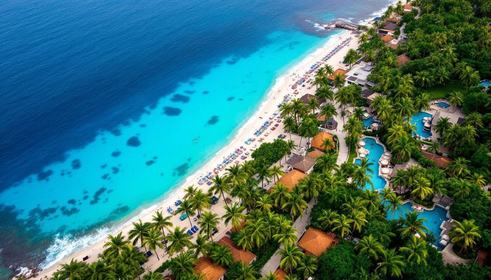
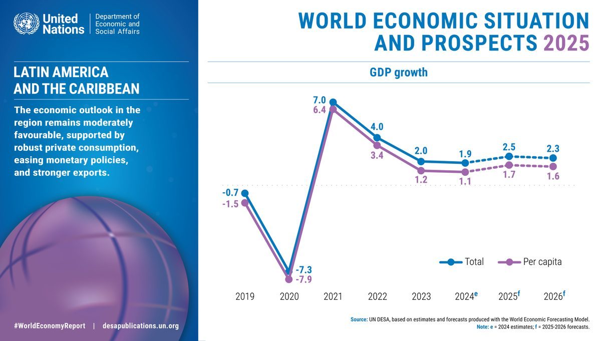

Resmi Devlet Kaynakları
| Kaynak | URL | Açıklama |
|---|---|---|
| Government of Saint Lucia | govt.lc | Hizmetler, formlar ve bakanlık iletişim bilgileri içeren resmi hükümet portalı |
| Attorney General's Chambers | attorneygeneralchambers.com | Şirket tescili, yasalar, hukuki kaynaklar |
| Inland Revenue Department | irdstlucia.gov.lc | Vergi bilgileri, formlar, vergi türleri A-Z, çevrimiçi hizmetler |
| National Insurance Corporation | stlucianic.org | NIC kaydı, katkı oranları, yardım bilgileri |
| Saint Lucia Parliament | parliament.gov.lc | Mevzuat, Hansard, parlamento tutanakları |
| Citizenship by Investment Unit | cipsaintlucia.com | Yatırım yoluyla vatandaşlık programı detayları, başvuru süreci, onaylı projeler |
Düzenleyici Kurumlar
| Kurum | URL | Yetki Alanı |
|---|---|---|
| Financial Services Regulatory Authority (FSRA) | fsrastlucia.org | Banka dışı finansal hizmetler: sigorta, MSB'ler, uluslararası bankalar (A/B Sınıfı), menkul kıymetler, yatırım fonları, emeklilik |
| Eastern Caribbean Central Bank (ECCB) | eccb-centralbank.org | Para politikası, yurt içi bankacılık düzenlemesi, XCD para birimi yönetimi, 48 yıllık USD sabitlemesi (EC$2,70 = US$1) |
| National Utilities Regulatory Commission (NURC) | — | Elektrik, su ve telekomünikasyon tarifelerini düzenlemek üzere 2016'da kurulmuştur. LUCELEC ve WASCO tarife incelemelerini denetler |
| National Telecommunications Regulatory Commission (NTRC) | ectel.int | ECTEL çerçevesinde telekom düzenlemesi. İSS lisansı, frekans yönetimi, kalite standartları uygulaması |
| Data Protection Commission | — | 2011 Veri Koruma Yasası kapsamında kurulmuştur. Kişisel veri işleme ve gizlilik uyumluluğunu düzenler |
| Saint Lucia Bureau of Standards (SLBS) | slbs.org.lc | Ürün standartları, kalite güvencesi, metroloji, ithalat sertifikası, CARICOM standartları uygulaması |
Yatırım Kaynakları
| Kaynak | URL | Açıklama |
|---|---|---|
| Invest Saint Lucia | investstlucia.com | Yatırım tanıtımı, sektör rehberleri, teşvik bilgileri |
| TEPA - Trade Export Promotion Agency | tepa.org.lc | İhracat desteği, pazar erişimi, ticaret verileri |
| Saint Lucia Chamber of Commerce | stluciachamber.org | İş ağı oluşturma, savunuculuk, işletme rehberi |
| US State Dept. Investment Climate Statement | state.gov | ABD hükümetinin iş ortamına ilişkin kapsamlı değerlendirmesi |
| Saint Lucia Hotel & Tourism Association | slhta.org | Turizm sektörü bilgileri, üyelik, etkinlikler |
| BOOST Saint Lucia | boostsaintlucia.com | Invest Saint Lucia tarafından girişimciler ve yeni kurulan işletmeler için sanal iş kuluçka merkezi |
| Youth Economy Agency | youtheconomy.lc | Genç girişimciler (18–35 yaş) için hibeler, krediler ve mentorluk |
| Export Saint Lucia (TEPA) | exportsaintlucia.org | İhracat tanıtımı, pazar istihbaratı, ticaret kolaylaştırma hizmetleri |
Hukuk & Vergi Kaynakları
| Kaynak | URL | Açıklama |
|---|---|---|
| PwC Tax Summaries - Saint Lucia | taxsummaries.pwc.com | Ayrıntılı kurumsal ve bireysel vergi rehberi (düzenli olarak güncellenir) |
| UHY - Doing Business in Saint Lucia (PDF) | uhy.com | Hukuki, vergisel ve pratik bilgileri kapsayan kapsamlı iş rehberi |
| Eastern Caribbean Supreme Court | eccourts.org | OECS devletleri için mahkeme kararları, kurallar, yargı bilgileri |
| BizLatinHub - Saint Lucia | bizlatinhub.com | Şirket kurma rehberi ve iş hukuku genel bakışı |
Altyapı & Hizmetler
| Sağlayıcı | URL | Hizmet |
|---|---|---|
| LUCELEC | lucelec.com | Tek elektrik sağlayıcısı. ~432 GWh üretim. Ticari bağlantı başvurusu, tarife tabloları, arıza bildirimleri |
| WASCO | wasco.gov.lc | Su ve kanalizasyon. Yeni bağlantılar, kademeli tarife tabloları, hizmet kapsam alanları, 2026 kuraklık uyarısı |
| Flow (C&W Communications) | discoverflow.com/lc | Geniş bant internet (fiber, 500 Mbps'ye kadar), sabit hat, mobil, TV. İşletme planları US$185/ay'dan başlayan fiyatlarla |
| Digicel | digicelgroup.com/lc | Mobil, geniş bant internet, kurumsal çözümler. Ada genelinde LTE kapsama |
| Starlink | starlink.com | Uydu internet. 2024'ten beri Saint Lucia'da mevcut. Kurumsal plan: US$120/ay + US$599 donanım |
| SLASPA | slaspa.com | Saint Lucia Hava ve Deniz Limanları Otoritesi. Liman tarifeleri, havalimanı bilgileri, kargo hizmetleri, kruvaziyer programları |
| GPH (Global Ports Holding) | globalportsholding.com | Port Castries kruvaziyer operasyonları. 30 yıllık imtiyaz, liman geliştirme için US$135M yatırım |
Araştırma & Ekonomik Veriler
| Kaynak | URL | Açıklama |
|---|---|---|
| IMF - Saint Lucia | imf.org | Madde IV istişareleri, ekonomik görünüm, ülke verileri |
| World Bank - Saint Lucia | worldbank.org | Kalkınma göstergeleri, raporlar, proje bilgileri |
| Central Statistical Office of Saint Lucia | stats.gov.lc | Ulusal istatistikler, nüfus sayımı verileri, ekonomik göstergeler |
| Eastern Caribbean Central Bank | eccb-centralbank.org | Para politikası, bankacılık istatistikleri, ekonomik değerlendirmeler |
| Caribbean Development Bank | caribank.org | Bölgesel ekonomik raporlar, kalkınma verileri, proje finansmanı |
| Moody's Analytics - Saint Lucia | economy.com | Ekonomik göstergeler, tahminler, kredi değerlendirmeleri |
Uluslararası Kuruluşlar
| Kuruluş | URL | İlgi Alanı |
|---|---|---|
| CARICOM | caricom.org | Karayip tek pazarı, ticaret anlaşmaları, bölgesel entegrasyon |
| OECS | oecs.org | Ekonomik birlik, ortak politikalar, bölgesel işbirliği |
| Caribbean Export Development Agency | carib-export.com | İhracat desteği, iş geliştirme, ticaret kolaylaştırma |
| Caribbean Tourism Organization | onecaribbean.org | Turizm istatistikleri, araştırma, pazarlama |
Medya & Haberler
| Kuruluş | URL | Odak |
|---|---|---|
| St. Lucia Times | stluciatimes.com | Öncü çevrimiçi haber sitesi. İş dünyası, siyaset, ekonomi, gayrimenkul. Günlük güncellemeler |
| The Voice (St. Lucia) | thevoiceslu.com | Köklü gazete (1885'ten beri). Yerel haberler, iş dünyası, yorumlar |
| Loop News Caribbean | caribbean.loopnews.com | Saint Lucia ve OECS'yi kapsayan bölgesel Karayip haberleri. İş dünyası ve ekonomi bölümü |
| Caribbean News Now | caribbeannewsnow.com | Bölgesel haber toplayıcı. Yatırım, CBI, turizm ve ekonomi politikası haberleri |
| Caribbean Hotel & Tourism Association | caribbeanhotelandtourism.com | CHTA haberleri, turizm istatistikleri, otel sektörü raporları, yatırım analizleri |
Pratik Araçlar & Bilgiler
Döviz Çevirici
XCD, 1 USD'ye karşı 2,70 olarak sabitlenmiştir. Hızlı dönüşüm: USD'yi 2,70 ile çarpın (XCD için), XCD'yi 2,70'e bölün (USD için).
Saat Dilimi
Atlantik Standart Saati (AST), UTC-4. Yaz saati uygulaması yoktur. Yaz aylarında ABD Doğu saati ile aynı, kış aylarında 1 saat önde.
Telefon Kodu
Ülke kodu: +1-758. St. Lucia, Kuzey Amerika Numaralandırma Planı'na dahildir. ABD/Kanada'dan 1-758-XXX-XXXX olarak aranır.
Trafik
SOLDAN sürüş (İngiltere tarzı). Ziyaretçiler için geçici sürücü belgesi gereklidir (araba kiralama şirketlerinden veya polis karakolundan temin edilir). 3 ay geçerlidir.
Vize Gereksinimleri
Birçok ülke vatandaşları (ABD, İngiltere, Kanada, AB, CARICOM) 6 haftaya kadar ziyaretler için vizeye ihtiyaç duymaz. Özel gereksinimler için Göç Departmanı'na danışın.
Acil Numaralar
Polis: 999 | İtfaiye: 911 | Ambulans: 911 | Sahil Güvenlik: 758-452-2656
Dijital & Çevrimiçi Hizmetler
| Hizmet | URL | Açıklama |
|---|---|---|
| DigiGov Portal | digigov.govt.lc | 154 devlet hizmeti çevrimiçi: doğum belgeleri, araç hizmetleri, işletme kaydı |
| ROCIP - Company Registry | rocip.gov.lc | Şirketler ve Fikri Mülkiyet Sicili - işletme adı sorgulama, dosyalama |
| Pinnacle IBC Registry | saintluciaifc.com | Çevrimiçi IBC tescil ve yönetim platformu |
| IRD e-Services | irdstlucia.gov.lc | Bireyler ve işletmeler için çevrimiçi vergi beyanı ve ödeme |
| DCash (CBDC) | dcashec.com | ECCB'nin kişiden kişiye ve esnaf ödemeleri için dijital para birimi uygulaması |
| Financial Services Regulatory Authority | fsrastlucia.org | Finansal hizmetler düzenlemesi, lisanslı kuruluşlar, uyumluluk |
| Penny Pinch (Mobil Cüzdan) | mypennypinch.com | Saint Lucia'nın ilk lisanslı mobil cüzdanı. FSRA düzenlemeli. Mastercard ve Western Union ortaklıkları. |
| EveryData Credit Bureau | eccu.everydata.com | Kredi kontrolleri ve mali geçmiş raporlaması için ECCU kredi bürosu |
| SLUHC (Evrensel Sağlık Kapsamı) | sluhc.com | Saint Lucia Evrensel Sağlık Kapsamı programı — yol haritası ve uygulama güncellemeleri |
Bu Rehber - Tüm Sayfalar
Ülke Genel Bakışı
Coğrafya, yönetim, ekonomi
İş Kurulumu
Tescil, şirket türleri, formlar
Hukuk & Vergi
Vergi oranları, iş hukuku, mülkiyet
Kilit Sektörler
Turizm, tarım, teknoloji, enerji
CBI Programı
Yatırım yoluyla vatandaşlık seçenekleri
Yaşam Maliyeti
Konut, gıda, altyapı, sağlık
Etkinlikler & Takvim
Tatiller, festivaller, mevsimler
Harita & Bölgeler
Etkileşimli harita, konumlar
İşletme Rehberi
Devlet, bankalar, avukatlar
SSS
Sık sorulan sorular
CARICOM & Ticaret
Ticaret anlaşmaları, ihracat, pazar erişimi
Yatırım Kontrol Listesi
Adım adım eylem planı
Birincil Kaynaklar & Önemli Raporlar
Resmi Hükümet & Uluslararası Raporlar
| Belge | Kaynak | Kullanılan Veriler |
|---|---|---|
| IMF 2024 Article IV Consultation | IMF | GSYİH US$2,57 milyar, büyüme %4,7/%1,7, borç %76,7, işsizlik %10,8, bankacılık sağlığı (NPL %11,6, SYR %15,4) |
| IMF 2025 Article IV Consultation | IMF (Ocak 2026) | En güncel ekonomik değerlendirme, mali görünüm, yapısal reform önerileri |
| Government Budget Address 2025/26 | govt.lc | EC$2,06 milyar bütçe, vergi muafiyeti EC$40K, Temmuz 2026 KDV gıda kaldırılması, siber güvenlik/yapay zeka teşvikleri |
| LUCELEC Annual Report 2022/23 | lucelec.com | 432 GWh üretim, 88,4 MW kapasite, %5,74 sistem kayıpları, EC$134M gelir |
| UNFCCC NDC 3.0 (2025) | unfccc.int | 2035'e kadar %22 koşulsuz / %32 koşullu emisyon azaltımı; jeotermal/güneş/rüzgar hedefleri |
| US State Dept. Investment Climate Statement 2025 | state.gov | İş ortamı değerlendirmesi, düzenleyici çerçeve, işgücü piyasası, yatırım engelleri |
| UHY - Doing Business in Saint Lucia (2024) | uhy.com (PDF) | Şirket kuruluşu, vergi oranları, iş hukuku, mülk edinme prosedürleri |
Sektör & Endüstri Kaynakları
- PwC Tax Summaries - Saint Lucia — Kurumsal ve bireysel vergi rehberi (düzenli olarak güncellenir)
- CIP Saint Lucia — CBI programı detayları, yatırım eşikleri, onaylı projeler
- ECCB — Para politikası, bankacılık istatistikleri, rezervler (EC$5,4 milyar, %98+ destek oranı)
- Caribbean Development Bank — Bölgesel ekonomik veriler, altyapı proje finansmanı
- Caribbean Tourism Organization — Turizm varışları, gelir (EC$3 milyar), kruvaziyer verileri
- CHTA — Otel yatırım hattı, sektör raporları, yatırım analizi
- RESDP (Yenilenebilir Enerji) — Sürdürülebilir Yenilenebilir Enerji Geliştirme Projesi, jeotermal program kilometre taşları
- İklim Finansmanı Birimi / GGGI — Saint Lucia'nın ulusal iklim mücadelesi için İklim Finansmanı Birimi
- Green Climate Fund — Saint Lucia — İklim finansmanı projeleri ve onaylı fonlar
İş Kurma & Danışmanlık Kaynakları
- BizLatinHub — Şirket kurma rehberi ve iş hukuku genel bakışı
- SFM — IBC kuruluşu, tescilli temsilci hizmetleri, uyumluluk
- Immigrant Invest — Saint Lucia'da iş kurma ve Karayip CBI karşılaştırması
- Global Citizen Solutions — Uluslararası yatırımcılar için vergi sistemi genel bakışı
- North Immigration — 2025 vergi sistemi analizi
- Playroll — Çalışma izinleri, yabancı çalışanlar için istihdam uyumluluğu
- CIP Saint Lucia — Yabancı Arazi Sahipliği Lisansı prosedürleri ve ücretleri
- Numbeo — Yaşam maliyeti verileri, market fiyatları, kira karşılaştırmaları (Ocak 2026)
İlgili Sayfalar
İşletme Rehberi
60+ doğrulanmış kayıt: hukuk büroları, muhasebeciler, bankalar, emlakçılar, devlet kurumları
İş Kurulumu
Tescil süreci, şirket türleri, bankacılık ve yetki alanı karşılaştırması
Yatırım Kontrol Listesi
Süreler, maliyetler ve gerekli belgeler ile adım adım eylem planı
SSS
İş, vergi, mülkiyet, göç ve günlük yaşam hakkında 42 sık sorulan soru